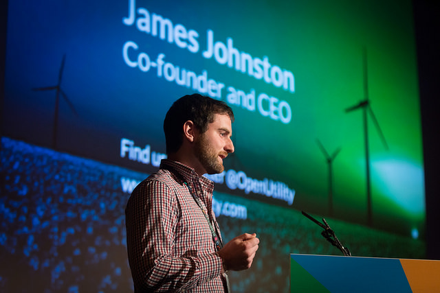
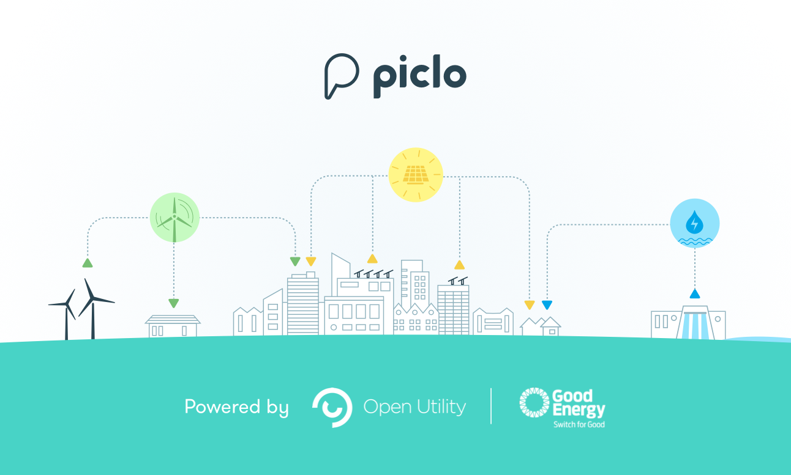

Open Utility: energy, open data and being an ODI Startup
We speak with energy startup Open Utility about how it is creating the UK’s first online market for renewable energy, and the best things about being an ODI Startup
The ODI Startup programme supports and promotes open data startups to help maximise open data’s economic, social and environmental benefits. The next deadline to apply is 11 September. Find out more about becoming an ODI Startup here.
 James Johnston of Open Utility, speaking at the ODI Summit 2014
Hi! How are you doing?
We’re doing great, thanks!
When you set up Open Utility, your mission was to create the first renewable electricity marketplace, where electricity consumers and generators can trade over the internet. How far have you achieved this? How many people use your platform?
We’re well on our way to achieving our mission. At the moment we’re busy preparing to launch the UK’s first online market for renewable energy, Piclo.
We’ve partnered with Good Energy to trial Piclo from October this year. For six months we’ll refine the service and product offering, so we can take Piclo to market as a commercial product in 2016. We’re looking for a controlled marketplace of up to 25 consumers and generators with half-hourly settled metered sites. Over 70 have enquired about joining so far. At the moment, we’re taking the customers who have signed contracts onboard, and liaising with the 20+ customers who are preparing to join.
What have been your main challenges in achieving your mission?
The main challenge has been finding the right product to help stimulate change within the highly regulated energy industry.
The route to market for Open Utility has changed since the company was set up in 2013. Originally, James, Andy and Alice (the three co-founders), set out to tackle the domestic energy market.
The energy industry is heavily regulated. It’s not possible to trade electricity without having a highly complex licence. In order to get reach the market, we have partnered with Good Energy to outsource this, which means the company can stay lean and focus on delivering data-driven solutions through our technology.
How are you using or producing open data in your work?
We want to take an industry which is hyper-closed about all energy data, and open up bits of data and information where we can. Piclo will give consumers and generators access to data that they’ve never been able to see before, on a daily basis.
For the first time, renewable energy generation sites can see their generation rates throughout the day, and see exactly who they’ve sold to. They will be able to control their pricing levels by offering discount, standard or premium pricing.
Consumers, on the other hand, will be able to choose the type of renewable electricity they buy (wind, solar, hydro), and see their consumption rates for every half-hour of each day. Piclo data will also show how much they consume within the DUoS (Distribution Use of System) charges throughout each day.
By opening up this data to Piclo users, we’re hoping people will share this information throughout the Piclo community and their own networks. We’re also working towards creating anonymised and aggregated datasets – open for anyone to see – based on Piclo information.

How did you hear about the ODI Startup programme, and what made you apply?
James was inspired to found the company after attending a Cleanweb meetup that was held at the ODI. So in a sense, we’ve known about the ODI and its startup programme from the very beginning. We always knew there was a great startup community around the ODI, and wanted to get involved. Joining the startup programme was the perfect way to do this.
What are the best things you’ve got out of being an ODI Startup?
Being part of the ODI has given Open Utility so many opportunities. We gained exposure speaking at ODI events, such as the 2014 ODI Summit, and we’ve been introduced to business contacts through ODI introductions. The startup scrums and ODI workshops have helped develop skills in fundraising, pitching, sales and more.
What do you have planned for the future of your organisation, and what is your call to action for others to help you achieve your goals?
If you like what you hear, and you want to be part of the future of energy, Piclo is still accepting registrations of interest from commercial consumers. You can find out more, and sign up ahead of October, on the Piclo website.
The ODI Startup programme supports and promotes open data startups to help maximise open data’s economic, social and environmental benefits. The next deadline to apply is 11 September. Find out more about becoming an ODI Startup here.